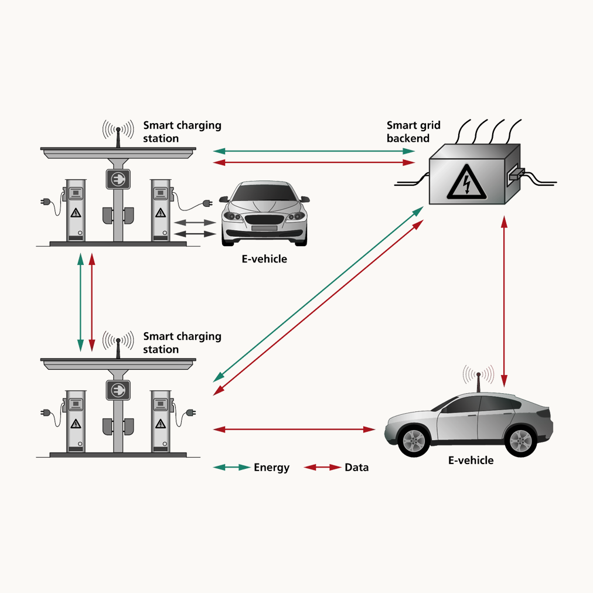

Optimizing Electric Vehicle Charging Infrastructure Placement
This project tackles the challenge of electric vehicle (EV) charging station placement by combining data-driven demand synthesis, charging-control policy simulation, and advanced optimization techniques—all presented in a formal IEEE conference report format and delivered as a research presentation to faculty at Purdue. With the rapid rise of EV adoption, siting charging stations to balance user convenience with grid reliability has become critical. My framework synthesizes realistic, time-varying demand, models diverse charging behaviors, and integrates both spatial and grid constraints into a modular pipeline.
The approach begins by generating synthetic EV trip and energy use patterns to emulate real-world urban demand. Multiple charging control policies are simulated to capture the variability in user plug-in habits and power profiles. Station locations are initialized using k-means clustering and then iteratively refined using a greedy local search, directly minimizing a combined cost of driver inconvenience and grid-node overload penalties. The final results show a 25% reduction in average user travel distance while guaranteeing zero grid-node capacity violations—demonstrating that the methodology is both efficient and highly effective for infrastructure planning.
Developed entirely as a standalone research project, this work provides a template for urban planners and utilities to rapidly explore the trade-offs between infrastructure density, user satisfaction, and grid performance. The computational workflow is adaptable to real-world constraints and paves the way for future integration with heterogeneous charger types, economic modeling, and stochastic optimization for resilient infrastructure design.
Key Features:
- End-to-end, simulation-driven workflow for EV charging station placement that accounts for both driver convenience and grid reliability.
- Flexible modeling of real-world demand and user charging behaviors under multiple charging policies.
- Near-optimal station siting achieved through a combination of k-means clustering and greedy local search optimization.
- Explicit incorporation of grid-node energy and power constraints to prevent infrastructure overload.
- Demonstrated 25% reduction in average driver travel distances and balanced infrastructure utilization in a campus-scale case study.
Technologies Used:
Project Gallery